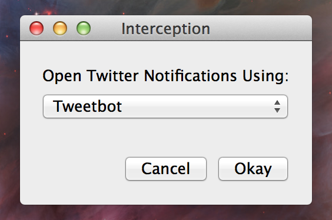

@jd93 Awesome…. will definitely keep you posted.
Month: July 2012
🗣
@uliwitness @MrRooni It’s comforting to know I’m not the only one left who’s still using Xcode 3 and Carbon 🙂
🗣
Every morning, it takes my brain about two hours to come to grips with the fact that we don’t use git here at the office.
🗣
Repost from this morning: my solution for launching native Twitter clients from Notification Center in Mountain Lion. http://t.co/8cEC3Wku
🗣
@jamesburland I built a workaround for #2. What twitter client do you prefer? http://t.co/8cEC3Wku
🗣
I wrote a little app to make Mountain Lion Twitter notifications launch a Twitter client instead of Safari. http://t.co/8cEC3Wku
🗣
A little Sunday afternoon funnel cake http://t.co/Ibt9Exnd
Interception
Late last week, I finally got around to setting up Twitter as an account on Mountain Lion. I was disappointed to see that clicking a Twitter notification launches the default web browser and not Twitter.app or any other client. I do not enjoy using Twitter’s web interface, so I wrote a simple application that forwards these clicks to a native Twitter application of your choice.
Quick Start
If this sounds like something that you would find useful, download the beta and give it a try. The application is a single dialog that asks for your preferred Twitter client. Click ‘Okay’ and you’re all set. There should be no need to run the app again unless you want to switch to a different client.

Disclaimer
This software should be considered very “beta.” If things get weird and you find you can’t open http URLs anymore or something like that, just delete the .app and http://www.twitter.com/boxel.
How It Works
Interception registers itself as the default handler the URLs that are invoked when you click on a Twitter notification. If it notices a Twitter URL is being loaded by Launch Services, it catches the request and forwards it to the native twitter client you have chosen. All other URLs are silently passed as-is to the default web browser. A previous version of Interception set itself as the default http URL handler for the system, but this is no longer necessary.
Known Issues and Next Steps
Interception currently supports only the following Twitter clients:
– Tweetbot for Mac
– Twitter.app
– Tweet Deck
– Hibari
Currently Interception is just hard-coded with the bundle identifiers for each of these apps. In a future version, I might add a “Choose App” button which would let the user. If your favorite native Twitter client is not one of these four, please let me know.
Also, Twitter mentions and direct messages should land the user on different views inside the targeted Twitter app. I began to wire this up, but it seems that the Tweetbot for Mac public alpha is not yet honoring the Tweetbot URL Scheme, so I put that functionality on hold for all clients. Tweetbot is awesome, and this will be the next feature I add.
I have created a project over on Github where I will host the code. I have not posted it yet for two reasons. First, I did this in a bit of a hurry and I would like to clean up the code before I throw it out into the wild. Second, if our local Cocoaheads chapter gets going in the next month or two, I might like to present the project at a meeting and then release the source code and slides all at the same time.
Wrap-Up
Download It Here. Feedback is welcome.
I realize that if you’re favorite Twitter client is in the Mac App Store, it can use push notifications in Mountain Lion, in which case Interception won’t really be that useful. I’ve really been enoying Tweetbot for Mac, but it’s currently in alpha and doesn’t yet support remote push notifications. This application grew out of a script I wrote because I wanted to be able to launch Tweetbot from a notification even if Tweetbot wasn’t already running.
Incidentally, I’ve lost track of how many times I typed “Inception” while writing this post.
🗣
@marcoarment I haven’t regretted it. ML actually seemed to fix some issues I was having with the Retina MBP.
🗣
How does Twitter.app manage to look even worse than a Carbon app on the Retina MBP?